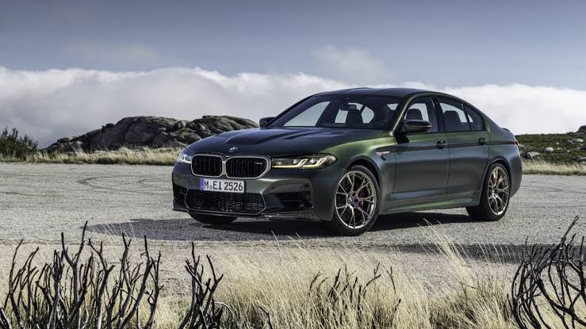
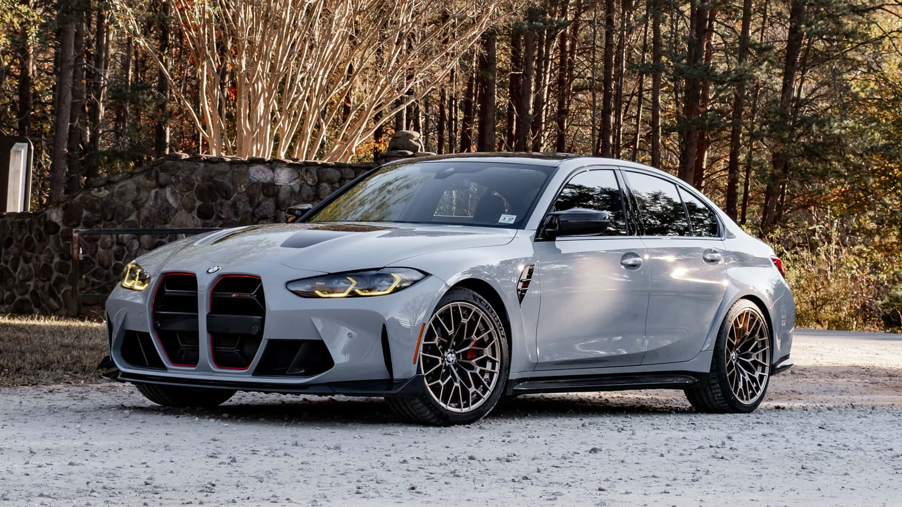
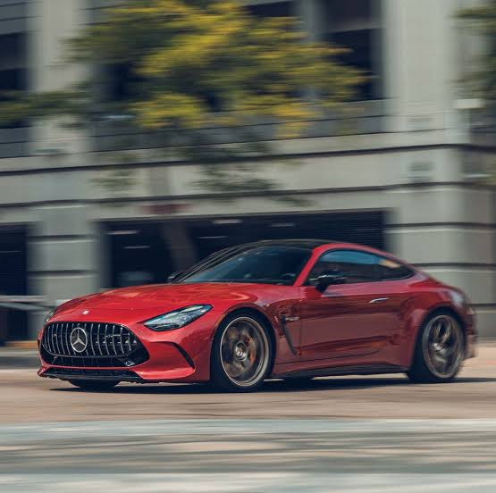
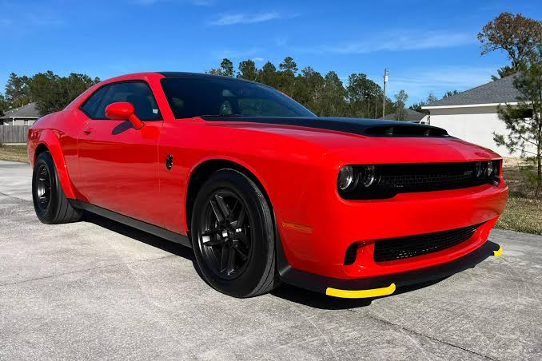
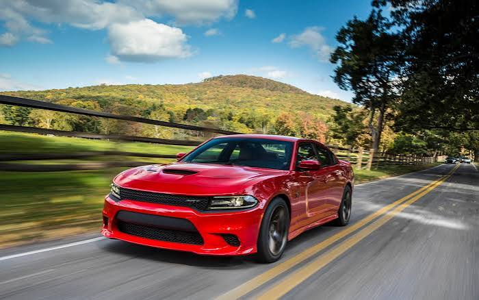
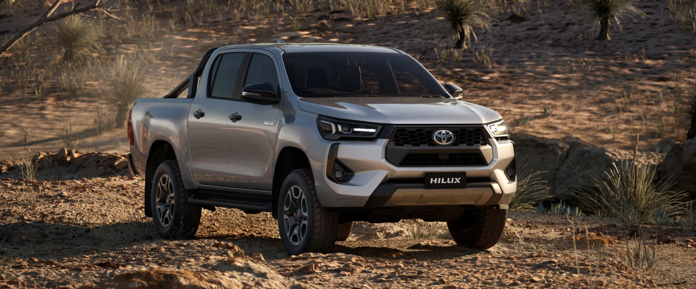
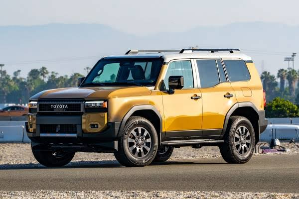

BMW
M5 CS
نسخهای خاص از سدان پرفورمنس BMW؛ ترکیبی از قدرت، تمرکز رانندگی و ظرافت مهندسی. M5 CS برای من تجسم ایدهای است که BMW را در ذهنم متمایز میکند: تعادل میان هیجان و کنترل.
- سدان پرفورمنس
- حس رانندگی متمرکز
- هویت M
The Garage
علاقهام به خودرو فراتر از ظاهر است؛ به طراحی، مهندسی، عملکرد و شخصیت ماشینها توجه میکنم. این گاراژ شخصی من است — بدون آمار جعلی، با احترام به هویت هر خودرو.
برند محبوب
BMW جایگاه ویژهای در سلیقه خودرویی من دارد. این ترجیح شخصی است، نه یک ادعای عینی که BMW در هر دستهای بهتر است. آنچه برای من BMW را متمایز میکند، ترکیب شخصیت رانندگی، مهندسی عملکردمحور، طراحی و رابطه میان راننده و ماشین است.
مدلهای M برای من نماد تعادل میان روزمرگی و اسپرت بودن هستند — و طراحی آنها هویتی دارد که بهراحتی اشتباه گرفته نمیشود.
خودروهای منتخب

BMW
نسخهای خاص از سدان پرفورمنس BMW؛ ترکیبی از قدرت، تمرکز رانندگی و ظرافت مهندسی. M5 CS برای من تجسم ایدهای است که BMW را در ذهنم متمایز میکند: تعادل میان هیجان و کنترل.

BMW
نسخهای تیزتر و سبکتر از M3 که بر تمرکز راننده تأکید دارد. برای من نمادی است از اینکه چگونه یک مهندسی دقیق میتواند شخصیت یک خودرو را دگرگون کند.

مرسدس-AMG
ترکیبی از لوکس بودن، عملکرد بالا و طراحی تهاجمی. AMG GT 63 برای من نشاندهنده رویکردی است که در آن لوکس و اسپرت در یک بسته قرار میگیرند.

Dodge
تجسم اصیل ماسلکار آمریکایی — جسورانه، پرهیاهو و با شخصیتی که سعی نمیکند شبیه چیز دیگری باشد. Challenger برای من نمایندهی رویکردی است که قدرت و شخصیت را بالاتر از ظرافت میداند.

Dodge
نسخهای با طراحی عضلانی و شخصیت عملکردی متمایز. Charger برای من ترکیبی است از کاربردی بودن سدان با روحیهای که از سنت ماسلکار آمریکایی میآید.

Toyota
پیکاپی با تمرکز بر دوام و کاربردپذیری. Hilux برای من نشاندهنده رویکردی است که در آن مهندسی، پیش از هیجان، به فکر دوام و کارکرد درازمدت است.

Toyota
نمادی از توانایی آفرود، مهندسی مستحکم و سفرهای طولانی. Land Cruiser برای من تجسم خودرویی است که با گذشت زمان و شرایط سخت، هویت خودش را حفظ میکند.
یادداشت
این ترجیحات شخصی هستند. هدف این صفحه ارائه مشخصات فنی دقیق یا مقایسه عینی نیست؛ بلکه بازتاب سلیقه و نگاه شخصی من به خودروهاست. تصاویر خودروها در صورت تأمین، جایگزین placeholderهای فعلی خواهند شد.